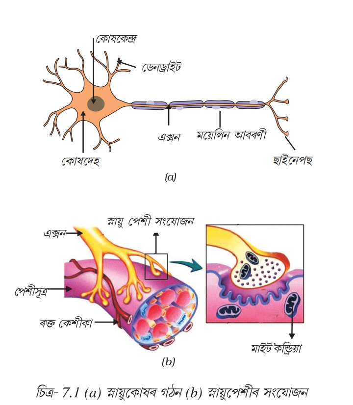
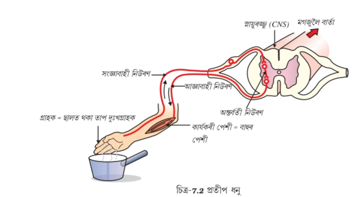
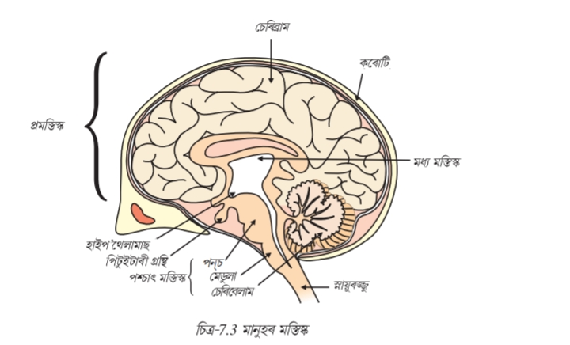

দশম শ্ৰেণী বিজ্ঞান | সম্পূৰ্ণ টোকা
পৰিৱেশৰ পৰিৱৰ্তনৰ প্ৰতি সঁহাৰি জনাই জীয়াই থকাটো সকলো জীৱৰ বাবে অপৰিহাৰ্য। বহুতো কোষযুক্ত জীৱৰ ক্ষেত্ৰত এই বাহ্যিক উদ্দীপনা গ্ৰহণ আৰু তাৰ প্ৰতি সঠিক সঁহাৰি প্ৰদান কৰাৰ বাবে এক জটিল ব্যৱস্থা থাকে। এই নিয়মীয়া কাৰ্য প্রধানকৈ দুটা ব্যৱস্থাৰ জৰিয়তে সম্পন্ন হয়: স্নায়ুতন্ত্ৰ, যি ক্ষিপ্ৰ বৈদ্যুতিক স্নায়ুস্পন্দনৰ জৰিয়তে তৎক্ষণাৎ সঁহাৰি আগবঢ়ায়, আৰু অন্তৰাভ্যন্তৰীণ গ্ৰন্থিতন্ত্ৰ, যি হৰম'ন নামৰ ৰাসায়নিক বাৰ্তাবাহকৰ জৰিয়তে লেহেমীয়া কিন্তু দীৰ্ঘম্যাদী নিয়ন্ত্ৰণ প্ৰদান কৰে।
স্নায়ুতন্ত্ৰৰ গঠন: স্নায়ুতন্ত্ৰ কিছুমান বিশেষধৰ্মী কোষ দ্বাৰা গঠিত, যাক স্নায়ুকোষ বা নিউৰন বোলে। এই কোষে শৰীৰৰ এঠাইৰ পৰা আন এঠাইলৈ বৈদ্যুতিক সংকেতৰ জৰিয়তে খৰটকীয়াকৈ খবৰ আদান-প্ৰদান কৰিব পাৰে। এটা সাধাৰণ নিউৰনৰ তিনিটা মূল ভাগ থাকে:
নিউৰনৰ কাৰ্যপ্ৰণালী আৰু চাইনেপ্স: পৰিৱেশৰ পৰা অহা বাৰ্তাবোৰ ডেনদ্ৰাইটৰ মূৰত গ্ৰহণ কৰা হয়, যিয়ে এটা ৰাসায়নিক সঁহাৰিৰ জৰিয়তে বৈদ্যুতিক স্নায়ু প্ৰেৰণা সৃষ্টি কৰে। এই স্নায়ু প্ৰেৰণা ডেনদ্ৰাইটৰ পৰা কোষদেহলৈ আৰু তাৰ পিছত এক্সনৰ মাজেৰে এক্সনৰ প্ৰান্তলৈ দ্ৰুতগতিত গতি কৰে।
দুটা নিউৰনৰ মাজত কোনো প্ৰত্যক্ষ সংযোগ নাথাকে, সেয়েহে বাৰ্তা বোৰ পাৰ হ'বলৈ এটা সূক্ষ্ম খালী ঠাই থাকে যাক চাইনেপ্স (Synapse) বোলে। বৈদ্যুতিক স্নায়ু প্ৰেৰণা এক্সনৰ মূৰত পোৱাৰ লগে লগে নিউৰ’ট্ৰেন্সমিটাৰ নামৰ কিছুমান ৰাসায়নিক পদাৰ্থ মুকলি হয়। এই ৰাসায়নিক পদাৰ্থবোৰে চাইনেপ্সৰ মাজেৰে পাৰ হৈ পিছৰ নিউৰনটোৰ ডেনদ্ৰাইটত থকা গ্ৰাহকত সংশ্লেষিত হৈ এটা নতুন বৈদ্যুতিক স্নায়ু প্ৰেৰণা সৃষ্টি কৰে। ইয়াৰ দ্বাৰা স্নায়ু প্ৰেৰণা কেৱল এটা নিৰ্দিষ্ট দিশতহে গতি কৰাটো নিশ্চিত হয়।

চিত্ৰঃ নিউৰণ
যেতিয়া এটা স্নায়ু প্ৰেৰণা কোনো কাৰ্যবাহী অংগ যেনে পেশীলৈ আহে, তেতিয়া স্নায়ুতন্ত্ৰই সেই বৈদ্যুতিক বাৰ্তা বোৰক শাৰীৰিক কাৰ্যলৈ ৰূপান্তৰিত কৰে। পেশীকোষবোৰত কিছুমান বিশেষ প্ৰ’টিন থাকে যিবোৰে বৈদ্যুতিক স্নায়ু প্ৰেৰণাত দ্বাৰা উদ্দীপিত হ’লে সিহঁতৰ আকৃতি আৰু বিন্যাস সলনি কৰে। বাৰ্তা পোৱাৰ লগে লগে এই প্ৰ’টিনবোৰ সংকুচিত হয়, যাৰ ফলত পেশীকোষবোৰ চুটি হৈ পৰে আৰু ইয়াৰ লগে লগে সংলগ্ন হাড় আৰু কলাবোৰ টানি ধৰি সুনিৰ্দিষ্ট শাৰীৰিক লৰচৰ বা গতিৰ সৃষ্টি কৰে।
প্ৰতীপ ক্ৰিয়া (Reflex Action): প্ৰতীপ ক্ৰিয়া হ’ল কোনো উদ্দীপনাৰ প্ৰতি তৎক্ষণাৎ, স্বয়ংক্ৰিয় আৰু অনিচ্ছাকৃত সঁহাৰি, যিটো মগজুৰ সচেতন চিন্তাৰ দ্বাৰা নিয়ন্ত্ৰিত নহয়। ই শৰীৰৰ হঠাতে হোৱা ক্ষতিৰ পৰা ৰক্ষা কৰে (যেনে: গৰম বস্তুত হাত লগাৰ লগে লগে তৎক্ষণাৎ আতঁৰাই অনা)।
প্ৰতীপ ধনু (Reflex Arc): প্ৰতীপ ক্ৰিয়াৰ সময়ত স্নায়ু প্ৰেৰণা বোৰে যিটো নিৰ্দিষ্ট পথ অনুসৰণ কৰে, তাক প্ৰতীপ ধনু বোলে। এই পথটো তলৰ অংশবোৰৰ দ্বাৰা গঠিত:

চিত্ৰঃ প্ৰতীপ ধনু
মানুহৰ মগজু হৈছে শৰীৰৰ মুখ্য নিয়ন্ত্ৰণ আৰু সমন্বয় কেন্দ্ৰ। ইয়াক ফোপোলা লাওখোলাৰ দ্বাৰা সুৰক্ষিত কৰি ৰখা হয় আৰু তৰল পদাৰ্থ ভৰা আৱৰণে আঘাতৰ পৰা ৰক্ষা কৰে। মগজুটিক মূলতঃ তিনিটা ভাগত ভাগ কৰা হৈছে:
| মগজুৰ বিভাগ | অংশ / গ্ৰন্থি | মুখ্য কাৰ্যসমূহ |
|---|---|---|
| প্ৰমস্তিষ্ক (Forebrain) | চেৰিব্ৰাম (Cerebrum) | মানুহৰ মগজুৰ আটাইতকৈ ডাঙৰ অংশ। ই বুদ্ধিমত্তা, স্মৃতিশক্তি, যুক্তি, চেতনা, শিকন, বাকশক্তি আৰু স্বেচ্ছাকৃত সংবেদনশীলতা (দৃষ্টি, শ্ৰৱণ, সোৱাদ, স্পৰ্শ) নিয়ন্ত্ৰণ কৰে। |
| থেলামাছ (Thalamus) | চেৰিব্ৰামৰ তলত অৱস্থিত এই অংশটোৱে সংবেদী বাৰ্তা সমুহ (গোন্ধৰ বাহিৰে) মগজুৰ সঠিক অংশলৈ পৰিবহন কৰাত মধ্যস্থতাকাৰী হিচাপে কাম কৰে। | |
| হাইপ’থেলামাছ (Hypothalamus) | শৰীৰৰ অভ্যন্তৰীণ ভাৰসাম্য (Homeostasis) বৰ্তাই ৰাখে। ই ভোক, পিয়াহ, শৰীৰৰ উষ্ণতা, টোপনি আৰু আৱেগ নিয়ন্ত্ৰণ কৰে। স্নায়ুতন্ত্ৰক অন্তৰাভ্যন্তৰীণ গ্ৰন্থিতন্ত্ৰৰ লগত সংযোজিত কৰে। | |
| পিটুইটাৰী গ্ৰন্থি | "প্ৰধান গ্ৰন্থি"। হাইপ’থেলামাছৰ নিৰ্দেশ অনুসৰি ই বৃদ্ধি হৰম'নসহ অন্যান্য গুৰুত্বপূৰ্ণ হৰম'ন নিৰ্গত কৰি সমগ্ৰ শৰীৰৰ গ্ৰন্থিসমূহ নিয়ন্ত্ৰণ কৰে। | |
| মধ্য মস্তিষ্ক (Midbrain) | - | প্ৰমস্তিষ্ক আৰু পাশ্যাৎ মস্তিষ্কৰ মাজত সংযোগ স্থাপন কৰে। ই চকু আৰু কাণৰ উদ্দীপনাৰ প্ৰতি সঁহাৰি জনাই মূৰ বা ডিঙিৰ হঠাতে হোৱা গতিবিধি নিয়ন্ত্ৰণ কৰে। |
| পাশ্যাৎ মস্তিষ্ক (Hindbrain) | চেৰিবেলাম (Cerebellum) | শৰীৰৰ ভংগীমা, ভাৰসাম্য আৰু স্বেচ্ছাকৃত গতিৰ নিখুঁততা নিয়ন্ত্ৰণ কৰে (যেনে: চাইকেল চলোৱা, পোনকৈ পথত চলা, লিখা আদি)। |
| মেদুলা অবলংগাটা | মেৰুদণ্ডৰ সৈতে সংলগ্ন হৈ থকা অংশ। ই হৃদস্পন্দন, ৰক্তচাপ, উশাহ-নিশাহ, লালা নিঃসৰণ, বমি হোৱা আদি গুৰুত্বপূৰ্ণ অনিচ্ছাকৃত কাৰ্যবোৰ নিয়ন্ত্ৰণ কৰে। | |
| পন্স (Pons) | মেডুলাৰ ওপৰত অৱস্থিত অংশ যিয়ে উশাহ-নিশাহৰ গতি নিয়ন্ত্ৰণ কৰাত আৰু মগজুৰ বিভিন্ন অংশৰ মাজত বাৰ্তা আদান-প্ৰদান কৰাত সহায় কৰে। |

চিত্ৰঃ মানুহৰ মগজু
উদ্ভিদৰ কোনো স্নায়ুতন্ত্ৰ বা পেশীকোষ নাথাকে, সেয়েহে সিহঁতৰ স্নায়ুৱিক (neurological) সমন্বয় নাথাকে। উদ্ভিদৰ ক্ষেত্ৰত নিয়ন্ত্ৰণ আৰু সমন্বয় সম্পূৰ্ণৰূপে ৰাসায়নিক বাৰ্তাবাহক বা উদ্ভিদ হৰম'নৰ (Phytohormones) দ্বাৰা সম্পন্ন হয়। ই বিপাকীয় ক্ৰিয়া আৰু বৃদ্ধি নিয়ন্ত্ৰণ কৰে।
লাজুকী বনৰ পাতবোৰ স্পৰ্শ কৰিলে লগে লগে তন্দ্ৰাচ্ছন্ন হৈ তললৈ হালি পৰে। এই গতি উদ্ভিদৰ বৃদ্ধিৰ লগত কোনো ধৰণে সম্পৰ্কিত নহয়, বৰঞ্চ ই এক তাৎক্ষণিক বৈদ্যুতিক-ৰাসায়নিক প্ৰক্ৰিয়া হয়:
উদ্ভিদে বাহ্যিক উদ্দীপনা অনুপাতে নিৰ্দিষ্ট দিশত বৃদ্ধিৰ দ্বাৰা যে গতি প্ৰদৰ্শন কৰে, তাক বেগী বা ট্ৰপিক গতি (Tropic movement) বোলে:
প্ৰাণীৰ দেহত ৰাসায়নিক সমন্বয় ৰক্ষা কৰিবলৈ কিছুমান বিশেষ গ্ৰন্থি থাকে। গ্ৰন্থিসমূহ মূলত তিনি প্ৰকাৰৰ:
| উদ্ভিদ হৰম'ন | মুখ্য কাৰ্যসমূহ |
|---|---|
| অক্সিন (Auxin) | উদ্ভিদৰ অগ্ৰগতিত বা ওখ হোৱাত সহায় কৰে আৰু নিজকে পোহৰৰ বিপৰীত দিশত সঞ্চিত হৈ কাণ্ডক পোহৰৰ ফালে বেঁকা হোৱাত সহায় কৰে (Phototropism) সহায় কৰে। |
| জিব্বাৰেলিন (Gibberellin) | কাণ্ডৰ দৈৰ্ঘ্য বৃদ্ধিত, ফল ফুল ধৰাত আৰু বীজৰ অংকুৰোদগম ঘটাত সহায় কৰে। |
| ছাইট'কাইনিন (Cytokinin) | কোষ বিভাজন ত্বৰান্বিত কৰে, ফলস্বৰূপে কোষৰ দ্ৰুত বৃদ্ধি ঘটে। |
| এবচিচিক এচিড (Abscisic Acid - ABA) | ই গেছীয় হৰমন হয়। ই বৃদ্ধি প্ৰতিৰোধক হৰম'ন। পাত ম্লান কৰি সৰি পৰি যোৱাত আৰু প্ৰসুত অৱস্থা (Dormancy) বজাই ৰখাত সহায় কৰে। |
প্ৰাণীৰ দেহত স্নায়ুতন্ত্ৰৰ লগতে হৰম'নৰ জৰিয়তে ৰাসায়নিক সমন্বয় সম্পাদিত হয়। প্ৰধান অন্তঃস্ৰাৱী গ্ৰন্থি আৰু হৰম'নসমূহ:
| অন্তঃস্ৰাৱী গ্ৰন্থিৰ নাম | নিঃসৃত হৰম'ন | মুখ্য কাৰ্যসমূহ |
|---|---|---|
| পিটুইটাৰী গ্ৰন্থি( মনত ৰাখিবা,ই সকলো অন্য গ্ৰন্থিক নিয়ন্ত্ৰণ কৰে) | বৃদ্ধি হৰম'ন (Growth Hormone) | শৰীৰৰ সামগ্ৰিক বৃদ্ধি আৰু বিকাশ নিয়ন্ত্ৰণ কৰে।(মনত ৰাখিবা ইয়াৰ পৰা ওলোৱা দেহ বৰ্ধক হৰমন কম হলে মানুহ বাওনা হয় আৰু অধিক হলে মানুহ দুৰ্জই ওখ হয়) |
| থাইৰইড গ্ৰন্থি | থাই্ৰক্সিন (Thyroxine) | শৰীৰৰ শৰ্কৰা, চৰ্বিৰ বিপাকীয় ক্ৰিয়া (Metabolism) নিয়ন্ত্ৰণ কৰে (মনত ৰাখিবা আয়ডিনৰ অভাৱত গৰল ৰোগ হয়।) |
| এড্রিনেল গ্ৰন্থি(অধিবৃক্ক) | এড্রিনেলিন (Adrenaline) |
সঙ্কটকালীন হৰম'ন বা "ফাইট অৰ ফ্লাইট" হৰম'ন: ভয়, উত্তেজনা, বিপদ বা সংকটকালীন অৱস্থাত এড্রিনেল গ্ৰন্থিৰ পৰা এই হৰম'ন পোনপটীয়াকৈ তেজত নিৰ্গমিত হয়। মুখ্য কাৰ্যসমূহ:
|
| অগ্নাশয় | ইনচুলিন (Insulin) | তেজত গ্লুকোজৰ মাত্ৰা নিয়ন্ত্ৰণ কৰে।(মনত ৰাখিবা, শৰীৰত ইনচুলিনৰ মাত্ৰা কমিলে মধুমেহ ( ডাইবেটিছ) হয় । ইয়াৰ প্ৰতিকাৰ হিচাপে ডাক্তৰে ইনচুলিন বেজী বা ঔষধ লবলৈ দিয়ে ।) |
| পুৰুষৰ যৌনাংগ(শুক্ৰাশয়) | টেষ্টোষ্টেৰন | দ্বিতীয় যৌন লক্ষণসমূহৰ বিকাশ আৰু প্ৰজনন তন্ত্ৰ নিয়ন্ত্ৰণ কৰে। |
| মহিলাৰ যৌনাংগ(অণ্ডাশয়) | ইষ্ট্ৰজেন আৰু প্ৰজেষ্টেৰণ | দ্বিতীয় যৌন লক্ষণসমূহৰ বিকাশ আৰু প্ৰজনন তন্ত্ৰ নিয়ন্ত্ৰণ কৰে। |
দশম শ্ৰেণী বিজ্ঞান | গুৰুত্বপূৰ্ণ অতিৰিক্ত প্ৰশ্ন আৰু উত্তৰ